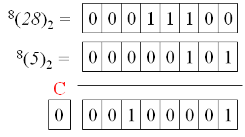
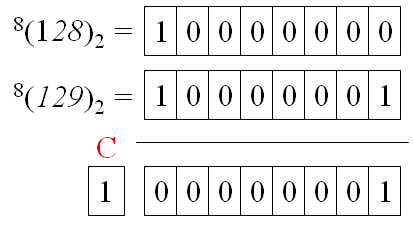
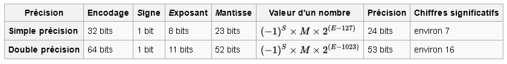
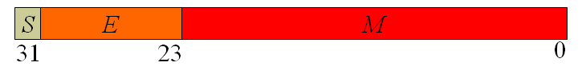

CM2 - Représentation d'informations dans un ordinateur.
Table des matières
Ce chapitre aborde de manière rapide quelques notions importantes pour la représentation des données. Un travail personnel est nécessaire pour approfondir les différentes notions traitées.
Notion de Codage
En informatique, toute information est représentée par une suite de 0 ou 1. Un élément \(x\in\{0,1\}\) est appelé un « bit » (contraction de binary digit). Un bit prend donc deux valeurs différentes.
Un codage est un processus qui permet de passer d’une représentation d’informations à une autre, de manière bijective pour ce cours (il existe des codage non bijectifs comme ceux qui servent à crypter les mots de passe).
Avec un code sur un bit on peut représenter deux informations différentes. Deux voyants lumineux, source Pixabay
On peut définir une fonction de codage \(f:{On,Off}\rightarrow\{0,1\}\) telle que \(f(Off=0\) et \(f(On)=1\). La fonction de décodage est \(f^{−1}:\{0,1\}\rightarrow\{Off,On\}\) telle que \(f^{−1}(0)=Off\) et \(f^{−1}(1)=On\).
Avec 2 bits, on peut représenter 2x2 informations.
Avec trois 3 bits, on peut représenter 2x2x2 informations.
D’une manière générale, un code sur \(n\) bits permet de représenter \(2^n\) informations.
Exemple :Soit \(m = 223\) informations différentes à représenter. \(log_2(223) = 7.8008 …\) \(\lceil log_2(223) \rceil = 8\). Il faut donc au minimum 8 bits.
De manière réciproque, pour représenter \(m\) informations il faut au moins \(\lceil log_2(m) \rceil\) bits où la notation \(\lceil x \rceil\) représente l’entier immédiatement supérieur à \(x\) et \(log_2(m)\) est le logarithme en base 2 de \(m\) soit \(log_2(m) = log(m) / log(2)\).
Depuis 2009, la France utilise un nouveau système de numérotation des véhicules.
Actuellement, les lettres I, O, U ne sont pas utilisées pour éviter les confusions avec, respectivement, 1, 0 et V. Le couple de lettres SS n’est ni utilisé à gauche, ni à droite. Le couple de lettres WW n’est pas utilisé à droite.
Avec ce système, combien de véhicules peut-on immatriculer ?
Si l’on affectait un code binaire à chaque véhicule pouvant être représenté selon ce code, combien de bits seraient nécessaires ?
En choisissant un code binaire pour chaque lettre et un code binaire pour le nombre, combien de bits seraient nécessaires ?
Sachant qu’il y avait environ 37 millions de véhicules immatriculés en 2009 et qu’il y a environ 3 millions de nouvelles immatriculations chaque année, quelle est la durée approximative de ce codage ?
Entiers non signés
Un nombre est représenté par une suite de chiffres lus de gauche à droite. Pour un nombre exprimé en base \(B\), chaque chiffre appartient à un ensemble de \(B\) symboles distincts.
En base 2 (système binaire) : \(x \in \{0,1\}\)
En base 8 (système octal) : \(x \in \{0,1,2,3,4,5,6,7\}\)
En base 10 (système décimal) : \(x \in \{0,1,2,3,4,5,6,7,8,9\}\)
En base 16 (système hexadécimal) : \(x \in \{0,1,2,3,4,5,6,7,8,9,A,B,C,D,E,F\}\)
On notera \(N_B\) un nombre exprimé en base \(B\). Lorsqu’il n’y a pas d’ambiguïté, on écrira \(N\) lorsque \(N\) est exprimé en base 10. Ainsi, \(11_{10} = 11\).
On écrira \((N_A)_B\) la conversion du nombre \(N\) exprimé en base \(A\) vers la base \(B\).
\((9_{10})_2 = 1001_2\)
\((11_2)_{10} = 3\)
\((11101_2)_{16} = 1D_{16}\)
Soit \(N_B\) un nombre en base \(B\) sur \(n\) chiffres notés \(x_i, i\in\{0, n-1\}\).
\(N_B = x_{n-1}...x_2x_1x_0\ _B\).
La conversion de ce nombre en base 10 s’effectue en affectant à chaque \(x_i\) son poids \(p_i\) en base 10 multiplié par \(B^i\). Ainsi :
\((N_B)_{10} = p_{n-1}.B^{n-1} +...+ p_2.B^2+p_1.B^1+p_0.B^0\).
En suppposant que les chiffres de la base soient placés dans une liste ordonnée, le poids du chiffre est la position du chiffre dans cette liste. Ainsi, en base 2, en base 8 et de façon plus générale dans les bases inférieures ou égale à 10, le poids d’un chiffre en base 10 est le chiffre lui-même.
En base 16, les poids des chiffres de 0 à 9 sont les mêmes qu’en base 10. Les chiffres \(A, B, C, D, E, F\) ont respectivement les poids 10, 11, 12, 13, 14 et 15.
Exercice
Soient \(T = 323_8, U = 323_{16}, V = 1AF_{16}, W = 323_3\), comment s’écrivent respectivement ces nombres en base 10 ?
Soit \(X = 111011_2\) , comment s’écrit ce nombre en base 10 et en base 16 ?
Exercice
On a vu que si \(N_B = x_{n-1}...x_2x_1x_0\ _B\) sa conversion en base 10 est \((N_B)_{10} = p_{n-1}.B^{n-1} +...+ p_2.B^2+p_1.B^1+p_0.B^0\).
Quelle information fournit la division euclidienne de \((N_B)_{10}\) par \(B\)?
En déduire un principe général de conversion d’un nombre en base 10 vers une base quelconque.
Convertir le nombre 125 en base 2, en base 8 et en base 16 selon ce principe.
Retrouver les conversions en base 8 et en base 16 précédentes directement à partir de la conversion en base 2.
On écrira \(^P(N_A)_B\) la conversion du nombre \(N\) exprimé en base \(A\) vers la base \(B\) sur \(P\) chiffres.
Exemples
\(^8(9_{10})_2 = 00001001_2\)
\(^4(11_2)_{10} = 0003\)
Dans de nombreux langages de programmation, la représentation d’un nombre entier repose sur un codage exprimé sur un nombre de bits donné.
Entier sur 8 bits : le codage est \(^8(N_{10})_2\)
Entier sur 16 bits : le codage est \(^{16}(N_{10})_2\)
Entier sur 32 bits : le codage est \(^{32}(N_{10})_2\)
Addition de nombres non signés
D’une manière générale, dans une base quelconque, l’addition s’effectue dans la base, chiffres par chiffres, en commençant par le chiffre de plus faible poids et en propageant la retenue. On notera \(+_B\) l’addition dans la base \(B\).
Exemples
\(81_{10} +_{10} 89_{10} = 170_{10}\) ;
\(81_{16} +_{16} 89_{16} = 10A_{16}\);
\(00101_{2} +_{2} 01110_{2} = 10011_{2}\).
Lorsque la représentation s’effectue sur un nombre de chiffres donné, l’existence d’une retenue finale indique un débordement, c’est-à-dire l’impossibilité de représenter correctement le résultat dans le format donné Les unités arithmétiques et logiques des microprocesseurs intègrent ce processus de détection en positionnant un indicateur, souvent noté C, lorsque ce cas arrive. Il revient au programmeur, selon les langages de programmation qu’il utilise de veiller à ces problèmes de débordement. .
Exemples
Soient \(U = 28\) et \(V = 5\) deux nombres dont on calcule la somme sur une machine informatique sur 8 bits. L’opération est représentée ci bas. Le calcul conduit à une retenue finale non positionnée. Il n’y a donc pas de débordement. Effectivement, le décodage du résultat donne \(00100001_2 = 33_{10}\) qui est bien la somme de 28 et 5.

On effectue maintenant la même opération avec les nombres \(U = 128\) et \(V = 129\). Le calcul, illustré ci bas, conduit à une retenue finale positionnée. Il y a donc débordement et le résultat sera incorrect. En effet, le résultat s’exprime dans le format donné, c’est-à-dire sur 8 bits. Ainsi, son décodage donne \(00000001_2 = 1_{10}\) qui n’est pas la somme de 128 et 129.
On rappelle qu’avec 8 bits, le nombre de codes possibles est \(2^8 = 256\). La fonction de codage choisie permet de représenter les entiers positifs entre 0 et 255. La somme de 128 et 129 vaut 257 qui n’est pas représentable dans ce format.

Entiers signés
Introduction
Si aujourd’hui les notions de nombres positifs et nombres négatifs sont familières, il n’en a pas toujours été de même voir histoire des nombres négatifs.
Usuellement on distingue un nombre positif d’un nombre négatif par l’utilisation de deux symboles supplémentaires, respectivement + et -. En cas d’omission du signe + le nombre est considéré comme positif.
Une idée simple consiste à considérer ces deux symboles supplémentaires comme deux informations à coder. On peut donc penser à ajouter un bit à la valeur absolue pour coder le signe. Supposons une représentation de la valeur absolue des nombres sur 3 bits. On peut donc représenter \(2^3\) nombres soit les entiers de 0 à 7. L’ajout d’un bit pour le signe conduit à un codage sur 4 bits. On dispose de 16 codes pour représenter les nombres de -7 à +7 avec deux représentations possibles du 0, c’est-à-dire -0 et +0.
Choisissons pour ce bit, par exemple, la valeur 0 pour coder un nombre positif et la valeur 1 pour un nombre négatif. Le nombre +3 et -3 s’écriraient respectivement \({\color{red}0}011_2\) et \({\color{red}1}011_2\).
Cette représentation présente deux inconvénients :
le nombre 0 a deux codes différents (+0 et 0). En reprenant le codage précédent, les deux codes seraient \({\color{red}0}000_2\) et \({\color{red}1}000_2\).
l’utilisation de nombres négatifs dans une opération d’addition donne des résultats incorrects. Ainsi l’addition du nombre +3 (code \({\color{red}0}011_2\)) et du nombre -2 (code \({\color{red}1}010_2\)) donne le code \({\color{red}1}101_2\) dont le décodage serait -5.
Utilisation du code complément
L’idée du code complément repose sur un autre principe. Considérons que nous disposons toujours de 4 bits, soit 16 codes possibles. On réserve la moitié des codes pour les nombres positifs en utilisant la fonction de codage des nombres entiers non signés soit \(^4(N_{10})_2\). Les nombres positifs vont donc de 0 à 7. Ainsi le nombre +3 est codé 00112.
Les 8 codes restants sont utilisés pour représenter les nombres strictement négatifs. On ira donc de -8 à -1. L’avantage de cette représentation est d’éviter d’avoir deux codes pour 0, l’inconvénient est de désymétriser les échelles (-8 pour le plus petit nombre négatif et +7 pour le plus grand nombre positif).
Les huit codes restants sont tels que l’opération d’addition donne un décodage correct. On peut formaliser ce principe dans une base paire \(B\) sur \(P\) chiffres en posant :
\(^P(N)_B +_B {^P(-N)_B} = {^P(0)_B}\) où \(+_B\) représente l’addition dans la base \(B\).
Exemple
Illustrons ce principe en base 10 sur 4 chiffres. Sur les \(10^4\) codes disponibles, la moitié servent à coder les nombres positifs ou nul en utilisant la fonction de codage \(^4(N)\) : le nombre 0 s’écrit 0000, le nombre 3 s’écrit 0003 et le plus grand nombre positif représentable est 4999 qui s’écrit 4999.
Le codage des nombres négatifs s’effectue en résolvant l’équation précédente. Ainsi le code du nombre -3 est tel que :
\(^4(3) + {^4(-3)} = {^4(0)}\) soit \(0003 + {^4(-3)} = 0000\).
Le code de -3 est donc la valeur qu’il faut ajouter à 3 pour que les quatre derniers chiffres de l’opération d’addition valent 0000. Ainsi, \(^4(-3) = 9997\). En effet dans l’opération d’addition 3 + 9997 donne 10000 dont les quatre derniers chiffres sont bien 0000.
Important
Il est impératif de respecter l’écriture sur \(P\) chiffres. On rappelle que l’on peut omettre la base 10 dans l’écriture lorsqu’il n’y a pas d’ambiguïté.
L’exemple intuitif précédent permet de formuler la propriété suivante :
Pour une base \(B\) paire et \(P\) chiffres, \(^P(-N)_B = {^P(B^P - N)_B}\).
Note
Dans le codage des nombres négatifs :
Le résultat du calcul \(B^P - N\) est toujours supérieur ou égal à \(B^P / 2\) et s’écrit, par conséquent, sur \(P\) chiffres.
La valeur du chiffre de plus fort poids est toujours supérieure ou égale à \(B/2\). Cette propriété permet de distinguer facilement le codage d’un nombre positif de celui d’un nombre négatif. Ceci est particulièrement simple en base 2 où le bit de poids fort du code vaudra 0 pour les nombres positifs et 1 pour les nombres négatifs. On appelle ce bit, le bit de signe. Il est important de bien comprendre la différence entre ce codage et la représentation signe + valeur absolue vue au paragraphe précédent.
Exercice
Dans une représentation en base 2 sur 8 bits, donner le code de 3 puis le code de -3.
Dans une représentation en base 4 sur 3 chiffres, donner le code de 3 puis de -3.
Revenons à notre formulation précédente qui présente l’inconvénient de nécessiter une opération de soustraction alors que nous avions souhaité n’utiliser que des additions. Afin d’aboutir à un résultat facilement réalisable sur une machine informatique, il nous faut introduire la notion de complément.
Soit \(x_B\) un chiffre exprimé d’une base \(B\). On appelle complément en base \(B\) de \(x_B\), que l’on notera \(x^*_B\), le chiffre tel que :
\(x_B +_B x^*_B = (B - 1)_B\).
Exemples
en base 2, \(1^*_2 = 0_2\) car \(1_2 +_2 0_2 = 1_2 = 1\);
en base 8, \(1^*_8 = 6_8\) car \(1_8 +_8 6_8 = 7_8 = 7\) ;
en base 16, \(1^*_{16} = E_{16}\) car \(1_{16} +_{16} E_{16} = F_{16} = 15\).
Note
Le complément est involutif, c’est-à-dire \(x_B^{**} = x_B\).
Soit \(^P(N)_B\) un nombre en base \(B\) sur \(P\) chiffres, le complément de \(^P(N)_B\), noté \(^P(N)_B^*\), est obtenu en calculant le complément en base \(B\) de chaque chiffre de \(^P(N)_B\).
Exemples
en base 2 sur 8 bits, \(01011000_2^* = 10100111_2\)
en base 10 sur 3 chiffres, \(108^* = 891\)
Soit \(N_B\) un nombre en base \(B\) et \(P\) un nombre de chiffres alors \(^P(N)_B +_B {^P(N)_B^*} = {^P(B^P - 1)_B}\).
Exemples
en base 2 sur 8 bits: \(01011000_2 +_2 01011000_2^* = 01011000_2 +_2 10100111_2 \) \(= 11111111_2 = 255 = 2^8 - 1\)
en base 10 sur 3 chiffres, \(108 + 108^* = 108 + 891 = 999 = 10^3 - 1\)
De la propriété précédente on déduit \(B^P = (^P(N)_B +_B {^P(N)_B^*)_{10}} + 1\).
Nous pouvons maintenant utiliser \(B^P\) dans l’expression du calcul de \(^P(-N)_B = {^P((^P(N)_B} +_B {^P(N)_B^*)_{10}} + 1 - N)_B\).
L’expression \((^P(N)_B +_B {^P(N)_B^*)_{10}}\) peut s’écrire \((^P(N)_B)_{10} +_{10} (^P(N)_B^*)_{10} = N + (^P(N)_B^*)_{10}\).
On obtient donc \(^P(-N)_B = {^P((^P(N)_B^*)_{10} + 1)_B}\).
Notons que \((^P(N)_B^*)_{10} + 1 < B^P\) et s’écrit donc sur \(P\) chiffres, ce qui permet de simplifier l’écriture. En repassant en base \(B\) on obtient :
\(^P(-N)_B = {^P(N)_B^*} +_B 1\).
Ce code est appelé code complément à \(B\).
Exemple
Retrouvons, par ce nouveau calcul, le code de -3 en base 10 sur 4 chiffres que nous avions trouvé de manière plus intuitive. On a donc :
\(^4(-3) = {^4(3)^*} + 1\)
\(^4(3)^* = 0003^* = 9996\) donc
\(^4(-3) = 9996 + 1 = 9997\).
Effectuons le même calcul en base 2 sur 8 bits, soit :
\(^8(-3)_2 = {^8(3)_2^*} +_2 1\).
\(^8(3)_2^* = 00000011_2^* = 11111100_2\) donc
\(^8(-3)_2 = 11111100_2 +_2 1 = 11111101_2\).
Note
La complémentation d’un bit est une opération qui ne nécessite qu’un seul transistor. Le code complément à deux est donc un moyen peu coûteux pour représenter les nombres négatifs sur une machine informatique.
Important
Avec nos notations, la fonction de codage d’un nombre entier signé \(N\) dans une base \(B\) paire sur \(P\) chiffres est la suivante :
si \(0 \leq N < B^N/2\) alors \(f(N) = {^P(N)_B}\) ;
si \(-B^N/2 \leq N <0\) alors \(f(N) = {^P(-N)_B^*} +_B 1\).
Exercice
Calculer le code de -128 en base 2 sur 8 bits.
Calculer le code de -3 en base 16 sur 4 chiffres.
Si \(X\) est la conversion d’un nombre négatif, c’est-à-dire \(X = {^P(-N)_B} = {^P(N)_B^*} +_B 1\), que vaut \(X^* +_B\ 1\) ? Vérifier le résultat sur la question précédente.
Addition de nombres signés
L’addition de deux nombres signés s’effectuent en additionnant ces nombres dans la base dans laquelle ils sont représentés. Nous utiliserons la base 2 sur 8 bits dans la suite de cette partie.
Comme pour l’addition entre nombres non signés, l’addition de deux nombres signés peut donner un résultat incorrect dans la représentation choisie, c’est-à-dire sur le nombre de bits donné. On parle alors de débordement (overflow).
La règle de détection de ces débordements est simple et repose sur l’observation du signe des opérandes et du résultat. Ainsi, si l’on effectue la somme deux nombres positifs et que le résultat est négatif ou si l’on effectue la somme deux nombres négatifs et que le résultat est positif, il y débordement Les unités arithmétiques et logiques des microprocesseurs intègrent ce processus de détection en positionnant un indicateur, souvent noté V ou OV, lorsque ce cas arrive..
Exemple
soient \(U = 7\) et \(V = 123\) deux nombres. Leur représentation respective en base 2 sur 8 bits est \(^8(U)_2 = {\color{red}0} 0000111_2\) et \(^8(V)_2 = {\color{red}0} 1111011_2\). Les bits de signe de ces deux nombres, représentés en rouge, valent 0 indiquant que les nombres sont positifs, comme nous l’avons vu précédemment.
La somme de ces deux nombres est \(^8(U)_2 +_2 {^8(V)_2} = {\color{red}1}0000010_2= -126_{10}\). Le bit de signe du résultat est négatif, il y a donc débordement car la somme de deux nombres positifs devrait être un nombre positif. Si l’on fait le calcul en base 10 la somme est \(U + V = 130\) qui n’est pas représentable dans le format choisi. En effet, la plus grande valeur positive représentable en base 2 sur 8 bits est \(2^8 -1 = 127\).
Exercice
En base 2 sur 8 bits, on souhaite calculer les sommes \(S_1 = -2 + 5, S_2 = 4 + 7, S_3 = - 4 - 3, S_4 = -125 - 9\).
Pour chaque somme :
effectuer le calcul en base 2 ;
donner la valeur de l’indicateur de débordement (on utilisera la valeur 1 s’il y a débordement, 0 dans le cas contraire) ;
décoder le résultat en base 10 et comparer au résultat attendu.
Soient deux nombres signés \(U\) et \(V\). Soit \(W = U + V\). En notant \(S_U\) et \(S_V\) les signes respectifs des deux opérandes et \(S_W\) le signe du résultat, donner l’équation logique de l’indicateur de débordement.
Nombres en virgule flottante
Ce paragraphe a pour vocation d’effectuer une transition vers la représentation des nombres flottants dans le format IEEE 754. L’idée de la représentation en virgule fixe consiste à considérer un code de \(n\) chiffres composé de deux parties : une partie de \(p\) chiffres pour coder la partie entière et une partie de \(q\) chiffres pour coder la partie fractionnaire avec \(n = p + q\).
Exemples
En base 10, avec \(p = 5\) et \(q = 3\), le nombre N = 123,45 a pour code \({\color{blue}{00123}}{\color{red}{450}}\). La partie en couleur bleue représente la partie entière, celle en couleur rouge la partie fractionnaire.
En base 2, avec les mêmes valeurs de \(p\) et \(q\), le code \({\color{blue}{01110}}{\color{red}{010}}\) représente le nombre \(1110,01_2\).
Supposons que le code en virgule fixe, d’un nombre \(N_B\) en base \(B\), avec \(p\) chiffres pour la partie entière et \(q\) chiffres pour la partie fractionnaire s’écrive :
\(N^{p,q}_B = {{\color{blue}{x_{p-1}...x_1x_0}}{\color{red}{x_{-1}x_{-2}...x_{-q}}}}_B\)
La conversion en base 10 du code d’un nombre en base \(B\) en virgule fixe s’effectue de la manière suivante :
la décodage de la partie entière \({\color{blue}{x_{p-1}...x_1x_0}}\) s’effectue selon le même principe que pour un nombre entier non signé ;
le décodage de la partie fractionnaire \({\color{red}{x_{-1}x_{-2}...x_{-q}}}\) s’effectue en affectant à chaque \(x_{-j}, j \in \{1, q\}\) son poids \(p_{-j}\) en base 10 multiplié par \(B^{-j}\).
Les deux principes étant similaires, la fonction de décodage est :
\(N = p_{p-1}.B^{p-1} +...+ p_2.B^2+p_1.B^1+p_0.B^0+p_{-1}.B^{-1}+p_{-2}.B^{-2}+...+p_{-q}.B^{-q}\)
Exemple
Soit le code en base 2 \(N^{5,3}_2 = {\color{blue}{01110}}{\color{red}{010}}\) d’un nombre en virgule fixe, son décodage en base 10 est :
\(N = 0.2^4 + 1.2^3 + 1.2^2 + 1.2^1 + 0.2^0 + 0.2^{-1} + 1.2^{-2} + 0.2^{-3} = 14,25.\)
Exercice
La valeur en base 10 d’un nombre fractionnaire écrit en base \(B\) sur \(q\) chiffres est \(F = p_{-1}.B^{-1}+p_{-2}.B^{-2}+...p_{-q}.B^{-q}\).
Quelle information apporte la multiplication de \(F\) par \(B\) ?
En déduire un principe général pour convertir un nombre fractionnaire de la base 10 vers une base quelconque.
En utilisant ce principe, convertir le nombre 17,625 en virgule fixe en base 2 avec \(p = 5\) et \(q = 3\).
Nombres en virgule flottante
Ce paragraphe ne présente qu’une approche réduite de la représentation des nombres en virgule flottante. Le format le plus souvent utilisé dans les machines informatiques est la norme IEEE 754. Ce format et les opérations arithmétiques associées sont aujourd’hui implémentés dans la majorité des processeurs des ordinateurs afin de grantir leur exécution rapide.
La représentation flottante repose sur la décomposition d’un mot de 32 bits (« simple précision ») ou de 64 bits (« double précision ») en trois champs repectivement appelés Signe, Exposant et Mantisse.
Les deux formats fixés par la norme IEEE 754 sont résumés à la Fig. 5.

Formats de la norme IEEE 754 - source Wikipedia
La figure représente la répartition des champs pour le format simple précision.

Format de la norme IEEE 754 en simple précision
Décodage d’un nombre en virgule flottante sur 32 bits
Avec nos notations, pour un code normalisé sur 32 bits, le décodage est :
\(N_{10} = -1^S . (1,M_2 . 2^{(E_2)_{10} - 127})_{10}\).
Exemple
Soit \(N_{IEEE754} = \color{green}{1}\color{orange}{10001001}\color{red}{00000000001100000000000}\) le code d’un nombre en virgule flottante au format IEEE 754 sur 32 bits. On a :
\(S = \color{green}{1}\) ;
\(E = \color{orange}{10001001}_2 = 137_{10}\) ;
\(M = \color{red}{00000000001100000000000}_2\)
En appliquant la fonction de décodage on obtient :
\(N = -1^1 . ({1, 00000000001100000000000}_2 . 2^{137 - 127} )_{10}\)
\(N = -({1, 00000000001100000000000}_2 . 2^{10})_{10}\)
\(N = -({10000000000,1100000000000}_2)_{10}\)
\(N = -1024,75\).
Codage d’un nombre en format flottant sur 32 bits
Le principe est assez simple :
on détermine le signe S ;
on convertit le nombre en binaire (partie entière et partie décimale) ;
on détermine la mantisse en décalant à droite ou à gauche pour faire apparaitre 1,.. ;
on termine en calculant l’exposant.
Exemple
On cherche la représentation au format IEEE 754 sur 32 bits du nombre \(N = 12,625\).
Le nombre est positif donc \(S = \color{green}{0}\)
La conversion en binaire du nombre est \(N = 12,625_{10} = 1100,101_2\)
Le décalage de la virgule s’effectue à gauche dans ce cas. \(N = 1100,101_2 = 1,100101_2.2^3\). On exprime ensuite le résultat sur 23 bits \(M = {^{23}(100101_2)} = \color{red}{10010100000000000000000}_2\).
L’exposant \(E\) est obtenu en résolvant \(2^{E-127} = 2^3\) et en convertissant sur 8 bits, soit \(E = {^8(130)_2} = \color{orange}{10000010}_2\).
N = 12,625 est représenté par \(\color{green}{0}\color{orange}{10000010}\color{red}{10010100000000000000000}_{IEEE754}\)
Caractères
Cette partie du cours repose sur un travail personnel. Comme point de départ, on pourra lire l’article sur le codage des caractères de Wikipedia. On pourra aussi approfondir en lisant les articles sur l’ASCII, l’ASCII étendu, l’Unicode, le Art ASCII.
Exercice
Si un caractère est codé en ASCII :
comment passer du caractère “3” au chiffre 3 ?
comment récupérer la position d’une lettre dans l’alphabet ?
comment convertir une majuscule en minuscule ?
Si l’on saisit la suite de caractères 123 au clavier, quelle est la représentation de cette saisie dans la mémoire de l’ordinateur ?
Exercices supplémentaires
Afin de valider les connaissances acquises dans ce chapitre, nous proposons les exercices suivants.
Exercice 1: Codage et décodage
Une entreprise souhaite automatiser son système de stockage. Elle implante pour cela un transstockeur (voir figure ci-dessous) constitué de 10 rayonnages. Chaque rayonnage est une matrice de cases. Pour simplifier, on supposera que chaque rayonnage comporte 10 rangées de chacune 20 cases. Chaque case peut accueillir 3 casiers.
Transstocker @Wikipedia |
(1). Si l’on associait un nombre entier à chaque casier, combien de bits seraient nécessaires pour pouvoir coder la totalité des casiers du transstockeur ?
Pour gérer le rangement des casiers, il est décidé d’adopter un codage particulier pour repérer la position d’un casier dans le transstockeur. Ce code est construit de façon à prévoir la croissance de l’entreprise, qui envisage d’avoir un second transstockeur, dont la taille n’est pas encore définitive mais dont on sait qu’il pourrait avoir un maximum de 16 rayonnages de 16 rangées, chacune contenant 32 cases pouvant accueillir 4 casiers.
Il est donc proposé de construire un code de 16 bits de la manière suivante :
Le bit de poids fort représente le numéro du transstockeur ;
Les 4 bits suivants représentent le numéro du rayonnage dans le transstockeur;
Les 4 bits suivants représentent le numéro de la rangée dans le rayonnage;
Les 5 bits suivants représentent le numéro de la case dans la rangée ;
Les 2 bits suivants représentent la position du casier dans la case.
Ainsi le code 00100001100010012 correspond au 2e casier de la 3e case de la 4e rangée du 5e rayonnage du premier transstockeur.
(2). Quel est le code, exprimé en base 2, correspondant au 1er casier de la 5e case de la 3e rangée du 7e rayonnage du second transstockeur ?
(3). L’expression générale du code, exprimé en base 10, correspondant au casier \(a\) de la case \(b\) de la rangée \(c\) du rayonnage \(d\) du transstockeur \(e\) est:
\( N = (e-1)2^{15}+(d-1)2^{11}+(c-1)2^{7}+(b-1)2^{2}+(a-1), \)
où \(a\), \(b\), \(c\), \(d\), \(e\) sont exprimés en base \(10\). Justifier cette expression et calculer la valeur décimale du code correspondant à la question 2.
(4). En utilisant cette expression et les opérateurs «division entière (div ou // en Python)» et «reste de la division entière (modulo ou % en Python)», déterminer le numéro du casier, du transstockeur et du rayonnage correspondant au code \(N = 43822\).
Exercice 2: Numération et programmation
Soit \(N_3\) un nombre, exprimé en base \(B\) dont la partie entière s’écrit sur \(n\) digits et la parte fractionnaire s’écrit sur \(m\) digits. En notant \(x_i\) Les digits, ce nombre s’écrit:
\( N_B = x_{n-1}\dots x_1x_0x_{-1}\dots x_{-m}. \)
Un exemple de nombre écrit en base 2 de cette manièere est \(N_2 = (10010,101)_2\).
(1). Donner l’expression générale de ce nombre en base \(10\), \(N_{10}\) à partir de son expression en base 2. Que vaut \(N_{10}\) si \(N_2=(10010,101)_2\).
(2). À partir de l’expression générale \(N_{10}\), donner le principe de conversion de la partie entière et de la partie fractionnaire en base \(2\). Que vaut \(N_2\) si \(N_{10}=28,375\).
Exercice 3: Calcul flottant
(1). À partir de l’expression précédente en base 2 du nombre 28,375, donner sa représentation dans le format IEEE 754 en simple précision.
(2). On souhaite calculer en représentation flottante, les différentes valeurs produites par la suite \(u_n=4u_{n-1}-1\) avec \(u_0=\frac{1}{3}\). Dans un ordinateur, on ne pourra coder qu’une approximation de \(\frac{1}{3}\), c’est-à-dire en pratique \(\frac{1}{3}-\epsilon\) qvec \(\epsilon\) qui represénte la différente entre le nombre le plus proche qui est codé et \(\frac{1}{3}\). En partant de \(u_0=\frac{1}{3}-\epsilon\), analyser l’évolution des valeurs produites.